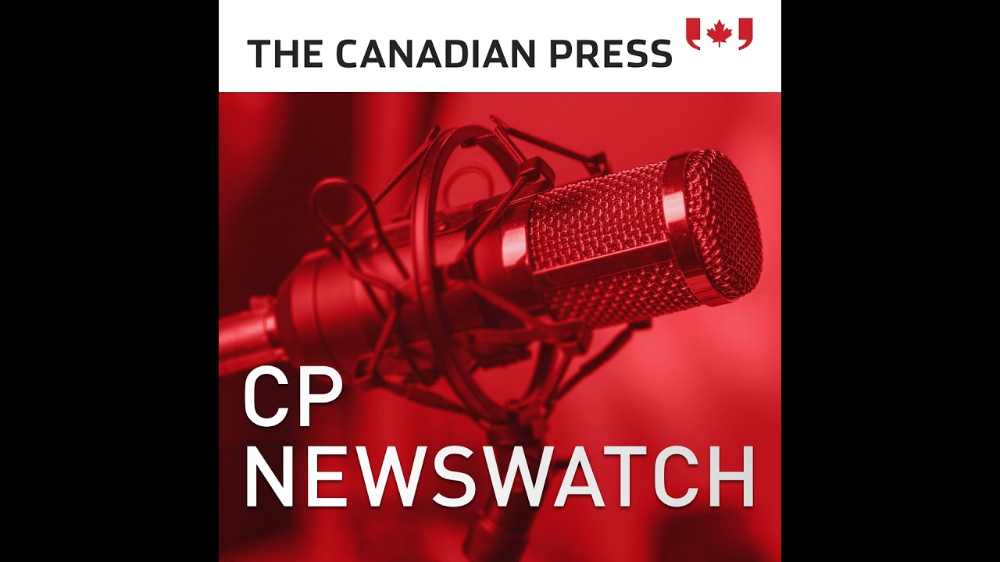

来B站一起耍【Global每日英语简报】
【特朗普在卡尼会晤及加沙危机前称武力吞并加拿大"极不可能"。】
Summary: Donald Trump stated it's highly unlikely the U.S. would use military force to annex Canada but didn't rule out doing so for Greenland, while criticizing trade deficits ahead of his meeting with Prime Minister Mark Carney, who faces pressure from Canadians and businesses; meanwhile, Gaza faces severe malnutrition, Ontario considers opt-out organ donation, Star Wars Day is celebrated, and sports updates include the Jets missing Mark Shifley for a playoff game, the Maple Leafs preparing to face the Panthers, and the Guardians defeating the Blue Jays.
摘要： 特朗普表示美国极不可能动用武力吞并加拿大，但未排除对格陵兰采取行动的可能，并在与面临加拿大民众及商界压力的总理马克·卡尼会晤前批评贸易逆差；与此同时，加沙遭遇严重营养不良，安大略省考虑推行器官捐献默认同意制度，星球大战日庆祝活动举行，体育方面喷气机队季后赛缺少马克·希夫利，枫叶队备战对阵黑豹队，守护者队击败蓝鸟队。

⏱️ Estimated Reading Time: 8 min
From the national newsroom of the Canadian Press, I'm Naira Ahmed.
来自加拿大新闻社国家新闻编辑室，我是奈拉·艾哈迈德。
Donald Trump says it's highly unlikely the United States will ever use military force to annex Canada.
唐纳德·特朗普表示，美国极不可能动用军事力量吞并加拿大。
Trump made the comments in a wide-ranging interview on NBC's Meet the Press.
特朗普是在接受NBC《会见新闻界》节目广泛采访时发表上述言论的。
Trump didn't rule out using the US military to take Greenland, but said he doesn't see it happening with Canada.
特朗普并未排除动用美军夺取格陵兰的可能性，但表示他认为这种情况不会发生在加拿大身上。
Trump is still griping about his country's trade deficit with Canada.
特朗普仍在抱怨美国对加拿大的贸易逆差。
We don't need their cars.
我们不需要他们的汽车。
We don't need their lover.
我们不需要他们的情人。
We don't need their energy.
我们不需要他们的能源。
We don't need anything.
我们什么都不需要。
We do very little business with Canada.
我们与加拿大的生意往来很少。
In fact, Canada's among the United States's top trading partners, sending $412 billion worth of exports south in 2024, most of it energy and minerals.
事实上，加拿大是美国最大的贸易伙伴之一，2024年向南方出口了价值4120亿美元的商品，其中大部分是能源和矿产。
Nick Murray, the Canadian Press, Ottawa.
加拿大新闻社，尼克·默里，渥太华报道。
Trump's comments come ahead of his meeting on Tuesday with Prime Minister Mark Carney.
特朗普发表上述言论之际，他将于周二与总理马克·卡尼会晤。
Carney is expected to perform a tight balancing act in the meeting.
预计卡尼将在会晤中小心谨慎地保持平衡。
Prime Minister Mark Carney will carry the weight of Canadians angry at President Donald Trump's taunts as well as the expectations of a business community looking for tariff relief.
马克·卡尼总理将肩负起加拿大民众对特朗普总统嘲弄的愤怒，以及商界期待关税减免的重担。
Executive Director of the Future Borders Coalition Laura Dawson says Trump has shown signs he still values the Canada US Mexico agreement.
未来边境联盟执行董事劳拉·道森表示，特朗普已表现出他仍然重视《加美墨协定》的迹象。
Canada and Mexico weren't included in Trump's global reciprocal tariffs and he made exemptions for KUSMA compliant imports in his fentanyl related duties.
加拿大和墨西哥未被列入特朗普的全球互惠关税清单，他还对符合《加美墨协定》的进口商品在芬太尼相关关税中给予豁免。
United States trade representative Jameson Greer said in a Fox interview last week that the Trump administration wants to maintain partnerships with its close neighbors and bring more manufacturing to all of North America.
美国贸易代表詹姆森·格里尔上周在接受福克斯采访时表示，特朗普政府希望与邻国保持伙伴关系，并将更多制造业引入整个北美地区。
Kelly Malone, the Canadian Press, Washington.
加拿大新闻社，凯利·马龙，华盛顿报道。
In Gaza now, hunger and malnutrition are on the rise as Israel's humanitarian blockade enters a third month.
目前加沙地带饥饿和营养不良现象加剧，以色列的人道主义封锁已进入第三个月。
UNICEF says some 3,600 children were admitted and treated for acute malnutrition in the past month.
联合国儿童基金会表示，过去一个月约有3600名儿童因严重营养不良入院接受治疗。
Dr. Michael Ryan with the World Health Organization.
世界卫生组织的迈克尔·瑞安博士。
We are starving the children of Gaza because if we don't do something about it, we are complicit.
我们正在让加沙的儿童挨饿，因为如果我们不采取行动，我们就是同谋。
Images of emaciated children becoming more frequent.
骨瘦如柴的儿童影像越来越频繁地出现。
A shortage of food and supplies has driven the territory towards starvation, and supplies to treat and prevent malnutrition are quickly running out.
食物和物资短缺使该地区陷入饥荒，治疗和预防营养不良的物资正迅速耗尽。
I'm Julie Walker.
我是朱莉·沃克。
Organ recipients are pushing the Ontario government to change donation rules.
器官接受者正推动安大略省政府修改捐赠规定。
A new bill tabled by the New Democrat Health Critic proposes to make organ and tissue donation a procedure to opt out of while still alive.
新民主党卫生评论员提出的一项新法案建议，将器官和组织捐赠设为生前默认同意（需主动退出）的程序。
The current system allows the living to opt in to donate organs upon death.
现行制度允许在世者选择在死后捐赠器官。
Advocates say only 36% of Ontarians have registered to be donors as 1,600 Ontarians are on the wait list.
倡导者表示，安大略省仅有36%的人登记成为捐赠者，而等待名单上有1600人。
Every 3 days, a person on that weight list will die because no organs were available to save their lives.
每三天就有一名等待者因缺乏可移植器官而死亡。
In 2021, Nova Scotia became the first jurisdiction in North America to adopt presumed consent organ and tissue donation.
2021年，新斯科舍省成为北美首个采用推定同意器官和组织捐赠制度的司法管辖区。
And within a year, donors were up 40%.
一年内捐赠者数量增加了40%。
New Brunswick is set to implement a similar program this year.
新不伦瑞克省将于今年实施类似计划。
And Prince Edward Island recently passed a non-binding motion to figure out if and how it can be done.
爱德华王子岛省最近通过了一项不具约束力的动议，研究是否及如何实施该制度。
And may the force be with you.
愿原力与你同在。
Star Wars fans are celebrating the space epic today through an unofficial fan-made holiday known as Star Wars Day.
《星球大战》影迷今天正通过名为"星球大战日"的非官方粉丝节日庆祝这部太空史诗。
This is the Canadian Press.
加拿大新闻社报道。
In sports, Jets forward Mark Shifley has been ruled out for Winnipeg's crucial playoff game tonight against the visiting St. Louis Blues.
体育方面，喷气机队前锋马克·希夫利将缺席温尼伯队今晚对阵来访的圣路易斯蓝调队的关键季后赛。
The Jets will be without one of their top scorers for game seven with the winner moving on to the second round to face the Dallas Stars and the loser eliminated from the postseason.
喷气机队将在第七场比赛中缺少他们的头号得分手之一，胜者将晋级第二轮对阵达拉斯星队，败者则被淘汰出季后赛。
Shyley left game five after taking a pair of big hits.
希夫利在第五场比赛中遭受两次猛烈撞击后离场。
Meanwhile, the Maple Leafs open the second round of the Stanley Cup playoffs tomorrow against the Florida Panthers.
与此同时，枫叶队将于明天开启斯坦利杯季后赛第二轮对阵佛罗里达黑豹队的比赛。
Toronto captain Austin Matthews says his team is ready for the defending Stanley Cup champs.
多伦多队长奥斯汀·马修斯表示，他的球队已准备好迎战卫冕冠军。
Leading into this just, you know, feel like we're we're a prepared group.
进入这场比赛时，你知道，感觉我们是个准备充分的团队。
we're ready to go and, you know, we know that the challenge that uh lies ahead and it's just taking it, you know, one step at a time.
我们已做好准备，并且清楚面临的挑战，只需一步一个脚印。
Florida eliminated Toronto in five games in the second round of the 2023 playoffs.
佛罗里达队在2023年季后赛第二轮以五场比赛淘汰了多伦多队。
In the MLB, the Cleveland Guardians beat the Toronto Blue Jays 5 to4 for their second straight loss at the Rogers Center.
美国职棒大联盟中，克利夫兰守护者队以5比4击败多伦多蓝鸟队，使后者在罗杰斯中心遭遇两连败。
And Canada beat Austria 5 to1 in the upcoming World Hockey Championship Tuneup game.
在即将到来的世界冰球锦标赛热身赛中，加拿大以5比1战胜奥地利。
From the Canadian Press, I'm Naira Ahmed.
加拿大新闻社，我是奈拉·艾哈迈德。
Thanks for listening.
感谢收听。
Don't forget to follow and subscribe.
别忘了关注和订阅。
For more of today's top stories, visit the Canadian pressnews.ca.
了解更多今日头条新闻，请访问加拿大新闻社官网。